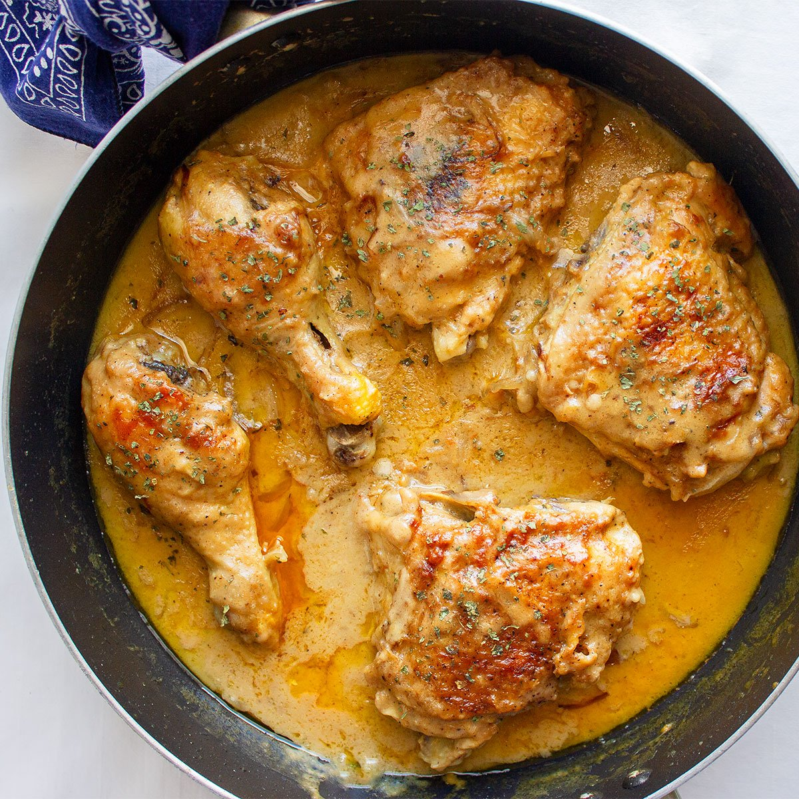

The BEST Smothered Chicken Recipe

Creamy Smothered Chicken
This smothered chicken recipe is best and easiest soul food to make! It is so good you will dream about it.
Ingredients
Chicken Seasoning
- 2 lbs Bone-In Chicken Thighs
- 2 tsp Accent Salt Seasoning
- 2 tbsp Adobo All Purpose Seasoning
- 2 tbsp Pollo Carne Asada Seasoning
- 2 tsp Pepper
- 1 tbsp Cajun Powder
- 1 tbsp Garlic Powder
- 1 tbsp Onion Powder
- 1 tbsp Red Hot Seasoning
- 1/2 cup oil
Sauce
- 1 Can of Cream of Mushroom Soup
- 1 large onion chopped
- 3 celery sticks chopped
- 1/2 red bell pepper chopped
- 1/2 green bell pepper chopped
- 1/2 cup water
Instructions
- Wash chicken with lemon and vinegar (optional).
- Pat chicken dry and generously season chicken and mix. Poke holes in chicken with knife to ensure the inside of chicken cooks.
- In a pan, heat the oil on medium low. Add chicken skin side down. When bottom of chicken turns golden, flip to the other side and cook until golden.
- Flip chicken back to skin side down and cover the pan with a lid for 4 mins.
- Remove chicken and keep about half of the grease left in the pan. Add in chopped onions, fry until light brown.
- Add in rest of vegetables and season a little bit with adobo and salt. Cook for 3 mins on medium high.
- Add in cream of mushroom and water to dilute thickness. Keep stirring for 3 mins.
- Add in fried chicken and cover lid for 20 mins on low heat or until cooked.
- Serve with rice and enjoy!!!!